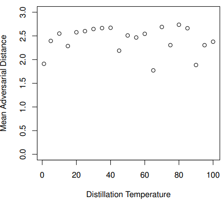

Advanced Machine Learning Final Project
Paper Introduction & Summarization
Nowadays lots of neural networks, including deep neural network, have become increasingly effective at many difficult machine-learning tasks. One of the major parts of this application is natural language processing. In this field, every natural language source becomes the dataset that could be learned. In one research, Harry Potter book became the dataset of the natural language processing, and they proposed the convolutional neural network for predicting the magic spell which can happen right after the behavior description in the book [3]. However, there are also lots of researchs which shows the vulnerability of the neural network from attack using advarsarial example [4]. The development of the algorithm that finds the advarsarial examples has inspired research on how to harden neural networks against these kinds of attacks. Defense algorithm also has been proposed and evaluated in lots of researches. Obfuscated Gradients [2] is one of the characteristic which could be in defense algorithm which can gives the false sense of security. In this paper [2], both defense causing obfuscated gradients and advarsarial example that can circumvent the obfuscated gradient in the defense are examined and developed respectively. Defensive distillation [5] is one recent defense algorithm proposed for hardening neural networks against adversarial examples. The proposed defensive distillation can be applied easily to any feed-forward neural network, and defeats existing attack algorithms and reduces their success probability from 95% to 0.5% with ease. Based on this defense algorithm, this paper [1] proposed 3 different new attack algorithm using L_0, L_2, L_inf distances metrics. This paper first shows the excellence of the proposed attack comparing with the previous approaches. Jacobian based Saliency Map Attack (JSMA) [6] is used as a comparing set using L_0 distance as a cost function of optimizer. Deepfool [7] is also introduced as a comparing set of attack technique optimized for the L_2 distance metric. Fast graident sign method [8] is used as a comparing set of optimizer using L_inf as a distance metric.
This paper also applied these attacks to defensive distillation and discover that distillation provides little security benefit over un-distilled networks when applying the propsed attacks. In the original work, increasing the temperature was found to consistently reduce attack success rate [1]. On MNIST, this goes from a 91% success rate at T=1 to a 24% success rate for T=5 and finally 0.5% success at T=100. Interestingly, the proposed attack did not degrade even though the distillation temperature increases from t=1 to t=100. The success rate is described in the table below.
 |
Furthermore, the mean advarsarial distance does not change even though the distillation temperature becomes higher. Figure below shows that proposed attacks works in a good mannor even though the distillation temperature becomes higher which effectively degrade the performance of the previous attack approaches.
|  |
In short, this paper proposed efficient attack algorithms which are using L_0, L_2, and L_inf distance metric as a cost function of the optimizer, and showed that proposed algorithms defeat defensive distillation. Also this paper mention that their attacks more generally can be used to evaluate the efficacy of potential defenses.
Measurements and Analysis When Attempting the original Result
Attack success rate is described in the above table
Success rate of the targeted attack and untargeted attack are both described with changing the distillation temperature
Distortion value of each case are described with changing the distillation temperature
Discussion
The paper [1] described that their algorithm works perfectly for distillation temperature(especially 100) applied training and every dataset including MNIST, and CIFAR-10. But when I tried to reproduce, there are some failure for each cases. I sampled the data to save time, and this could be a major reason of the success rate difference between paper and mine. If the reproducing is done for every dataset, success rate could get closer to 100%.
On the other hand, it is possible that the paper used the result from very small sample group. I also could get 100% success rate in a several small group of samples but if I expand the size 100% is no more achievable.
Because of the similar reason that I mentioned above, success rate using L_0 attack reachs almost 100% while L_2 attack is around 92%. I used small sample group when testing L_0 attack because L_0 attack takes much more time than L_2 attack if I use the same sample size. L_0 attack takes 5 times longer than L_2 attack with same sample size. For this reason, I used smaller sample group when testing L_0 attack, and this became the reason of better success rate.
As described in the paper [1], there is no big difference between the attack success rate of targeted attack and untargeted attack. In real, my experiment shows same results between the success rate of targeted attack and untargeted attack. But the paper's description shows that their should be a little bit of difference except distillation temperature = 100. In this case, parameter setup in model training and attack generation could induces the result under where both success rate could be same.
The distortion value for each distillation temperature shows no big change. As the temperature becomes higher, the distortion value also changed little bit but value itself is small enough to think that there is no change depending on the increase of the distillation temperature. Value itself shows little difference between the one described in the paper but the difference between them are also small enough to be thought as a same value. I also suspect that small data sample number could be the reason of the outlying distortion value result.
Reference
[1] Carlini, Nicholas, and David Wagner. "Towards evaluating the robustness of neural networks." 2017 IEEE Symposium on Security and Privacy (SP). IEEE, 2017.
[2] Athalye, Anish, Nicholas Carlini, and David Wagner. "Obfuscated gradients give a false sense of security: Circumventing defenses to adversarial examples." arXiv preprint arXiv:1802.00420 (2018).
[3] Vilares, David, and Carlos Gómez-Rodríguez. "Harry Potter and the Action Prediction Challenge from Natural Language." arXiv preprint arXiv:1905.11037 (2019).
[4] Szegedy, Christian, et al. "Intriguing properties of neural networks." arXiv preprint arXiv:1312.6199 (2013).
[5] Papernot, Nicolas, et al. "Distillation as a defense to adversarial perturbations against deep neural networks." 2016 IEEE Symposium on Security and Privacy (SP). IEEE, 2016.
[6] Papernot, Nicolas, et al. "The limitations of deep learning in adversarial settings." 2016 IEEE European Symposium on Security and Privacy (EuroS&P). IEEE, 2016.
[7] Moosavi-Dezfooli, Seyed-Mohsen, Alhussein Fawzi, and Pascal Frossard. "Deepfool: a simple and accurate method to fool deep neural networks." Proceedings of the IEEE conference on computer vision and pattern recognition. 2016.
[8] Goodfellow, Ian J., Jonathon Shlens, and Christian Szegedy. "Explaining and harnessing adversarial examples." arXiv preprint arXiv:1412.6572 (2014).